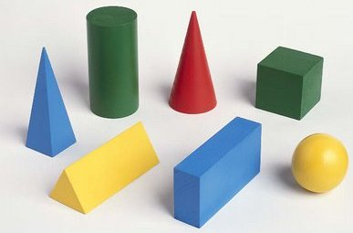
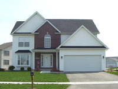
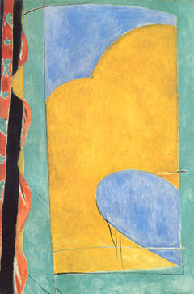
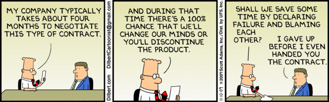
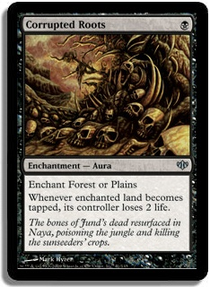

The OOP in PHP
Matthew Turland
I Work Here
- Internet solutions for ISPs, media companies, and advertisers
- Offices in Buffalo, New York City, Atlanta, Boston, and Toronto
- Clientele includes most of the top 20 USA cable providers
- Great company to work for - join us!
Lots of Guards Too
Or logs full of this:
PHP Notice: Undefined index: alpha
PHP Notice: Undefined index: bravo
PHP Notice: Undefined index: delta
Debugging Globals is Hard
Conclusion: We need a level of scope beyond the global namespace and individual function scope.
A Better Way
Objects!
- Malleable containers for logic and data definitions
- Helpful for organizing code into semantically meaningful units
- Can limit when/how data can be stored and changed

Encapsulation
"Encapsulation is used to refer to one of two related but distinct notions, and sometimes to the combination thereof:
A language mechanism for restricting access to some of the object's components.
A language construct that facilitates the bundling of data with the methods (or other functions) operating on that data."
http://en.wikipedia.org/wiki/Encapsulation_(object-oriented_programming)
What's a Class?
- "Blueprint" for creating objects referred to as instances
- Collection of variable/property and function/method definitions
- Provides a level of scope shared across multiple functions
See also: The Basics in the PHP manual
Visibility
"Each person is three people in one: the person everyone sees, the person only close family and friends see, and the person only they see."
(Most likely paraphrased) Chinese proverb
See also: Visibility in the PHP manual
Constants
See also: Constants in the PHP manual
Protected Access Modifier

Abstraction
"Abstraction is the process by which data and programs are defined with a representation similar in form to its meaning (semantics), while hiding away the implementation details... a concept or idea not associated with any specific instance."
http://en.wikipedia.org/wiki/Abstraction_(computer_science)

Design by Contract
"Design by contract... is an approach for designing software. It prescribes that software designers should define formal, precise and verifiable interface specifications for software components... These specifications are referred to as 'contracts,' in accordance with a conceptual metaphor with the conditions and obligations of business contracts."
http://en.wikipedia.org/wiki/Design_by_contract

ArrayAccess Interface
See also: ArrayAccess in the PHP manual
Iterator Interface
See also: Iterator in the PHP manual
Don't Repeat Yourself
"Don't Repeat Yourself (DRY) is a principle of software development aimed at reducing repetition of information of all kinds... is stated as 'Every piece of knowledge must have a single, unambiguous, authoritative representation within a system.'"
http://en.wikipedia.org/wiki/Don%27t_repeat_yourself

Horizontal Reuse
"Multiple inheritance is a feature... in which a class can inherit... features from more than one superclass. It is distinct from single inheritance, where a class may only inherit from one particular superclass."
http://en.wikipedia.org/wiki/Multiple_inheritance
"A mixin is a class which contains a combination of methods from other classes... not by inheritance... Mixins encourage code reuse and avoid well-known pathologies associated with multiple inheritance.
http://en.wikipedia.org/wiki/Mixin
"Traits are a mechanism for code reuse... by enabling a developer to reuse sets of methods freely in several independent classes living in different class hierarchies... and avoids the typical problems associated with multiple inheritance and mixins.
http://www.php.net/manual/en/language.oop5.traits.php
"Don't over-complicate this: traits are compiler-assisted copy-and-paste."
Rasmus Lerdorf, almost definitely paraphrased
Constructors and Destructors
Classmaps
Use a script like this one to generate the classmap during your build process
Beyond This Point
"Do not meddle in the affairs of dragons for you are crunchy and taste good with ketchup"
Magic Methods
"Magic" has the same connotation as "interesting" in the Chinese proverb.
Use these sparingly, intentionally, and with great hesitation.

See also: Magic Methods in the PHP manual
Serialization Magic Methods